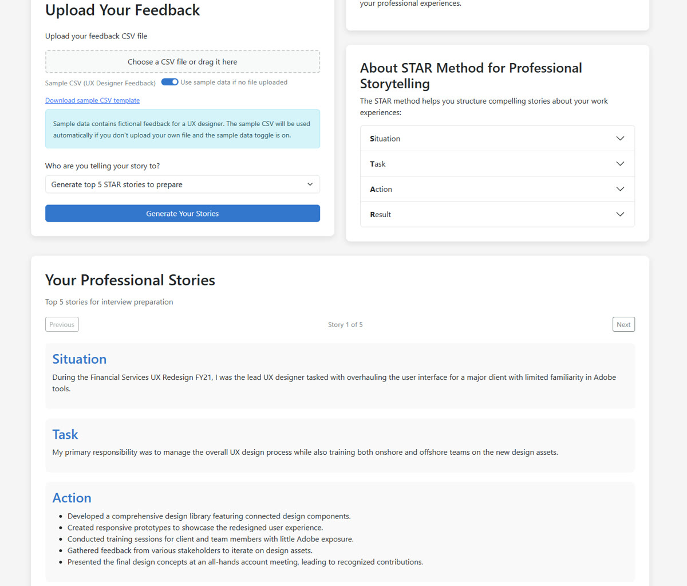

First published as a LinkedIn article on April 13, 2025. Rewritten for this site in October 2026. Code: azure-star-generator at da712d5, the last commit of that Sunday.
What changed since I wrote this
I came back to the repo twice in 2026. In April I gave the page a loading state, an error banner instead of a browser alert, and a better copy button (98bf9ea). In May I added GitHub Actions: a build and test run on every push, and a deploy to the Function App that signs in to Azure with OIDC instead of a stored password (c1cf6b4). Both workflows passed on May 9, 2026. That passwordless pattern is the subject of my June 2025 article on Azure RBAC for AI agents.
The tool ranking below is a snapshot of April 2025, and I've left it as I wrote it. The tools have moved a lot since. For a newer comparison, see four frontier models given one prompt, from July 2026.
1. What the app does and how it's wired
The app takes feedback you've received and writes STAR stories from it, the kind you'd prepare for an interview or a self-review. You upload a CSV of feedback, or flip a toggle to use the sample file, which is fictional feedback for a UX designer. Then you pick who the story is for: your top five to prepare, leadership, technical, sales, a colleague, a client, an employer, or a custom prompt. GPT-4o-mini writes the stories and the page lets you step through them.


All of it runs on one Azure Functions app with three HTTP functions. One serves the page, its CSS and its scripts. One parses the CSV. One generates the stories, and that one is split into a controller, a service, a prompt builder, an Azure OpenAI client and a response processor. That split came partway through the build, in a commit called "Refactoring the open ai integration into an MVC pattern".
- Load the pageA GET returns the HTML; the same function serves the CSS and each script by query string.DisplayStoryUIHtml
- Get the feedbackYour upload, or the sample CSV from a public Blob Storage container.browser
- Parse the CSVA POST turns CSV text into rows with Date, Source, Feedback Type, Tags and the feedback itself.ProcessCsvData
- Build the promptUp to 50 rows, the STAR rules, the audience guideline, a JSON example.GenerateStarStories
- Call GPT-4o-miniA bearer token from
DefaultAzureCredential, no API key in the request.openAIDao.js - Parse and validateJSON first, a text fallback second, then every story checked for all four parts.responseProcessor.js
da712d5. Steps 4 to 6 happen inside a single function call.One detail from the code: the Azure OpenAI client authenticates with DefaultAzureCredential and a bearer token. The README still lists an AZURE_OPENAI_KEY setting, and the code reads it, but nothing uses it. I picked GPT-4o-mini for cost. In April 2025 I noted it at $0.15 per million input tokens; check Azure's pricing page for today's number.
2. How the prompt asks for a STAR story
The prompt does most of the work. Its base spells out each part of STAR, down to the sentence count:
const basePrompt = `You are an expert in crafting professional STAR (Situation, Task, Action, Result) stories. Create compelling and authentic narratives based on the following feedback data that I've received. Each story must follow this specific structure: - Situation: Exactly ONE concise sentence that sets the context with specific details about the challenge or opportunity. Be specific and quantitative where possible. - Task: ONE to TWO sentences clearly explaining my specific responsibilities or objectives in this situation. Focus on what I needed to accomplish. - Action: A BULLETED LIST of specific steps I took, focusing on MY individual contribution even in team settings. Include 4-6 concrete actions. Feel free to extrapolate reasonable details based on the information provided. - Result: EXACTLY THREE sentences quantifying the positive outcomes where possible and linking them directly to my actions. The first sentence should focus on immediate impacts, the second on metrics or quantifiable outcomes, and the third on longer-term or broader implications. IMPORTANT: Each story must strictly adhere to this structure. Do not deviate from the format or omit any required elements. Ensure that the Situation, Task, Action, and Result are clearly distinct and follow the specified guidelines. Guidelines needs to be extrapolated, for example, if it's a sales topic we need to talk about revenue. If it's about technical we need to focus on result for a technical. ${contextInfo.instructions} ${contextInfo.audience}`;Then the prompt gets three more pieces. The audience you picked adds one guideline, for example "Focus on STAR stories that emphasize my ability to lead and inspire others" for leadership. Each feedback row goes in as a numbered entry, capped at 50 so the prompt stays a reasonable size. And the end of the prompt asks for a JSON array, shows two complete example stories, and says the reply must be "directly parseable by JSON.parse() without any modifications".
The JSON example was a late fix. The commit where the app first worked end to end says it "could use a JSON as an example of a story", and the next commit, "Backend Updates with Action and better Prompting", added the example and the bulleted action list.
The prompt also tells the model to "extrapolate reasonable details" and to quantify results where it can. The stories sound better for it. They can also carry numbers your feedback never mentioned. Check them against what really happened.
3. Why the parser has a fallback
Asking for JSON doesn't guarantee JSON. A model can wrap the array in a friendly sentence, put it in a code fence, or skip JSON and write labeled paragraphs. So the response processor tries three things in order: cut from the first [ to the last ], run JSON.parse, and if that throws, fall back to a text parser that looks for Situation, Task, Action and Result labels. Whatever comes out is validated, and a story missing any part is dropped.
function parseAIResponse(responseText) { try { // Try to extract JSON if it's wrapped in other text let jsonText = responseText; // Look for JSON array brackets if the response contains other text const jsonStartIndex = responseText.indexOf('['); const jsonEndIndex = responseText.lastIndexOf(']'); if (jsonStartIndex >= 0 && jsonEndIndex > jsonStartIndex) { jsonText = responseText.substring(jsonStartIndex, jsonEndIndex + 1); } // Parse the JSON const stories = JSON.parse(jsonText); // Validate that we have an array if (!Array.isArray(stories)) { throw new Error('Response is not a valid array'); } return stories; } catch (error) { // Fallback to the text parsing method if JSON parsing fails return parseAIResponseText(responseText); }}Here it is running on this page. Pick a reply, or edit the text yourself, and watch which path it takes:
Pick a model reply
The reply from the model (editable)
The replies are examples written for this page, not real model output.
What the processor does
- 1. Cut to the brackets
- 2. JSON.parse
- 3. Text fallback
- 4. Validate each story
| Model reply | Path | What the API returns |
|---|---|---|
| Clean JSON array | JSON.parse | 200, one story |
| JSON inside a sentence and a code fence | Cut to the brackets, then JSON.parse | 200, one story |
| Two stories, one with an empty result | JSON.parse, then validation drops story 2 | 200, one story |
| Action written as one string | JSON.parse, validation wraps it in a list | 200, one story with one action |
| Plain text with Situation, Task, Action, Result labels | JSON.parse fails, text fallback | 200, one story with three actions |
| A "[Note]" line before a JSON object | Cut from [Note], JSON.parse fails, text fallback finds the labels inside the JSON | 200, one story full of JSON fragments |
| No story at all | JSON.parse fails, text fallback finds nothing | 500, "Failed to generate stories: Story generation failed: Failed to process AI response: No valid stories were parsed from the response" |
da712d5. With JavaScript off, the table shows the result of each example reply.Running the parser on this page turned up one case worth knowing. If the reply has a bracket before the JSON, like "[Note]", the cut grabs the wrong span, JSON.parse fails, and the text fallback finds the words "situation" and "task" inside the JSON keys. The API returns 200 with a story made of JSON fragments. Validation only checks that each part exists.
4. The five AI tools, as of April 2025
I vibe coded the app, meaning I described what I wanted and let AI tools write the code. I used five of them and ranked them on four things: functional vibe, refactoring, handling outside context, and getting it right with minimal feedback. This is the ranking as I wrote it on April 13, 2025. The tools have changed a lot since, so read it as a snapshot.
| Rank | Tool | Where it was best | What held it back |
|---|---|---|---|
| 1 | Claude 3.7 CLI (@anthropic-ai/claude-code) | Terminal native. It understood the whole codebase, edited files, ran tests and handled Git, with very little handholding. Shockingly good at multi-step tasks like "refactor this file and update its dependencies across the repo". | Expensive: I was averaging about $0.15 per query. A research preview, so rough edges, like not working on Windows. |
| 2 | Claude 3.7 on the web | Large-context refactoring, breaking big components into smaller files, and exploring a design. Clear, maintainable code, and it took follow-up instructions well. | Copy and paste by hand. I couldn't switch branches in its GitHub context, which led to a messy spree of commits on main. Writing out every file took a while. |
| 3 | GitHub Copilot | Cheap, easy to set up, and fast for quick completions. The new agent mode cut a lot of the copy and paste, and you can set the context by hand. | Not as sharp on multi-file or abstract tasks, and no project-wide understanding. |
| 4 | ChatGPT-4o | Thinking out loud, checking logic, and breaking a problem down before taking it to another tool. | Not the best for accurate, scalable code, and it made things up the most for me. |
| 5 | Perplexity | Even with the Pro requests, I didn't have a great time with it. | |
The pattern under the ranking: the tool that could read the whole repo and run the tests needed the least handholding. The repo's README lists each tool and what it did.
If you've hardened a parser like this against real model replies, I'd like to hear which check caught the most for you.